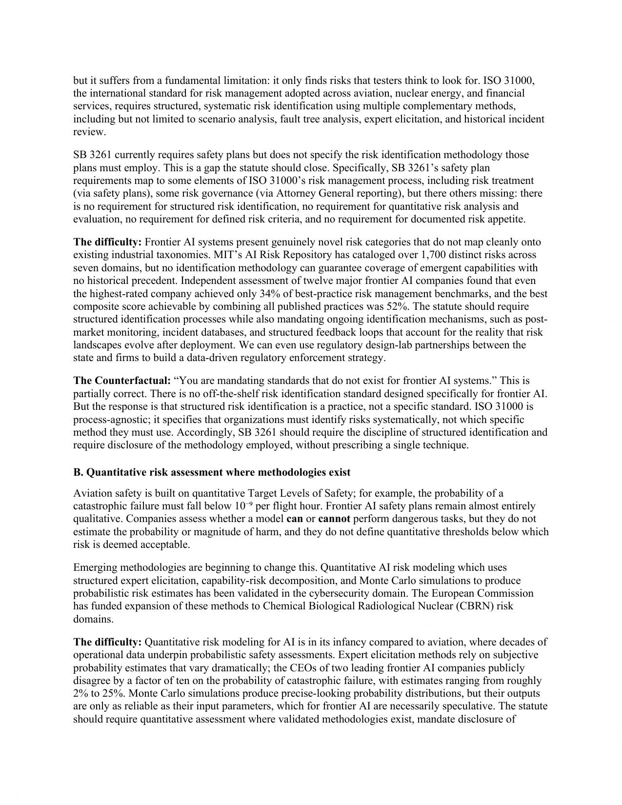
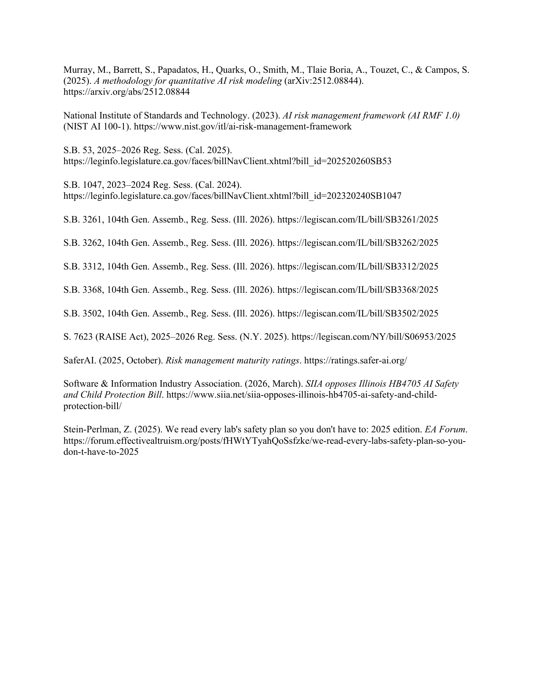

Written Testimony · April 8, 2026
On the Consolidation of Illinois' Frontier-AI Safety Bills Around SB 3261
Submitted to the Illinois Senate Executive Subcommittee on AI and Social Media — Consumer Protection, Group 1 Panel.
View-only document.
This testimony is published as a protected reading copy. Reproduction, copying, or redistribution without permission is not authorized. For citation requests or to obtain the source PDF, contact the author.
Page 4 / 11

Page 11 / 11

© 2026 Khullani M. Abdullahi. All rights reserved.
Submitted as official written testimony to the Illinois Senate Executive Subcommittee on AI and Social Media on April 8, 2026.
Reproduction or redistribution without permission is not authorized. For citation or quotation requests: khullani@techne.ai.
Submitted as official written testimony to the Illinois Senate Executive Subcommittee on AI and Social Media on April 8, 2026.
Reproduction or redistribution without permission is not authorized. For citation or quotation requests: khullani@techne.ai.